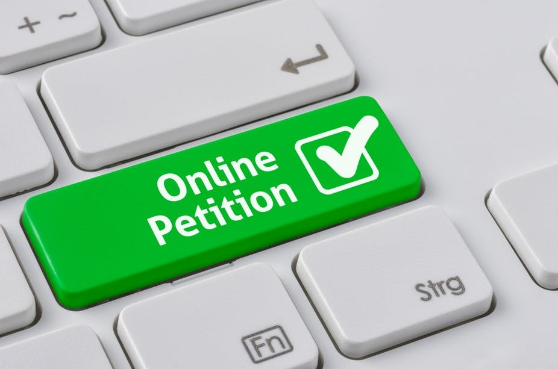
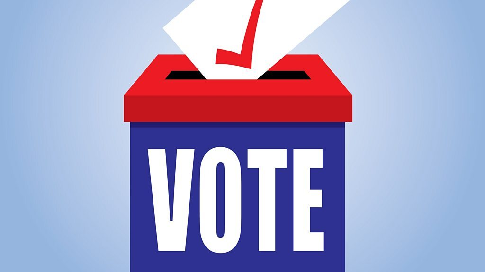
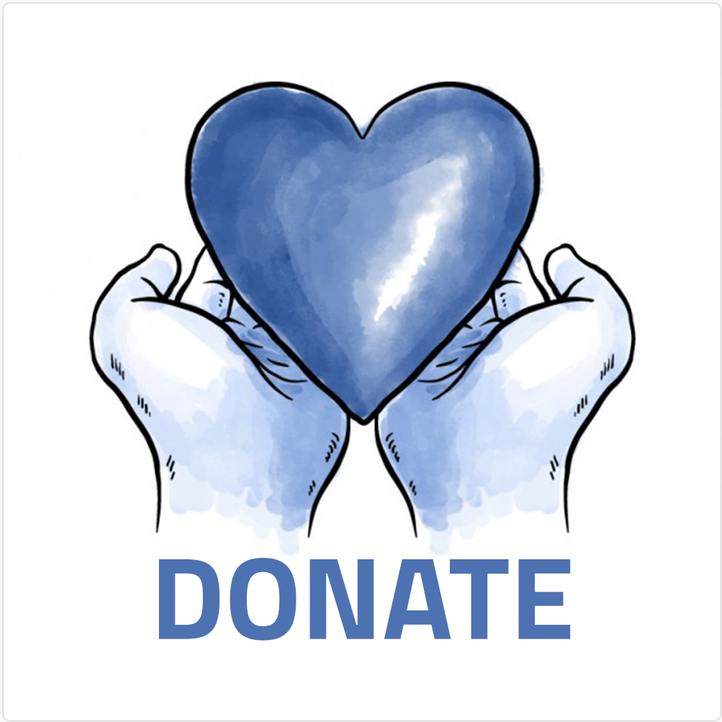
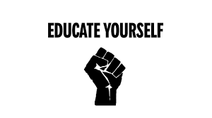

1. Sign a petition
 There are a number of petitions circulating in the wake of George Floyd’s killing, calling for justice for the black people killed in the past months and you can add your name now.2. Use your vote
 Wherever you are, you can support political movements and parties that are campaigning against racism. In the USA, Black Lives Matter is running a ‘register to vote’ campaign ahead of the 2020 presidential election.3. Donate to causes that need funding
 Following the death of George Floyd and the protests across the USA, a number of fundraising drives have been set up to support Floyd’s family, bail out protestors who have been arrested and support the wider Black Lives Matter movement. Some, like the Minnesota Freedom Fund, have raised huge amounts of money and are now redirecting donations to other organisations. Here are some US organisations that you can fund right now to support black people and help the fight against racism.4. Educate yourself and have difficult conversations
 Lasting change is not possible without actively deconstructing our beliefs about race. In order to bring about social and economic change in a society with racism deep-rooted in its institutions, it’s not enough to not be racist, but rather people need to be anti-racist. The best place to start learning how to be a helpful ally, is education and active listening. Podcasts, movies, and documentaries provide an easy and fun way for you to learn more about the history behind it all.Recommendations:
- -“13th” by Ava DuVernay, walks through the origins of the mass incarceration of black men, stretching all the way back to the ratification of the 13th Amendment in 1865.
- -“When they see us” by Ava DuVernay, tells the important story of the Central Park Five.
5. Show up to a protest
 Throughout history, public protests have been crucial to the visibility and success of civil rights
campaigns – from women winning the vote to LGBTQ+ rights. With mass public gatherings still banned
in many countries, it may seem difficult to take to the streets right now.
But many protests are still taking place, with social distancing and mask-wearing encouraged. And
some acts of protest are being arranged that don’t need you to go any further than your doorstep,
like online vigils via Zoom that you can join from anywhere in the world.
Throughout history, public protests have been crucial to the visibility and success of civil rights
campaigns – from women winning the vote to LGBTQ+ rights. With mass public gatherings still banned
in many countries, it may seem difficult to take to the streets right now.
But many protests are still taking place, with social distancing and mask-wearing encouraged. And
some acts of protest are being arranged that don’t need you to go any further than your doorstep,
like online vigils via Zoom that you can join from anywhere in the world.